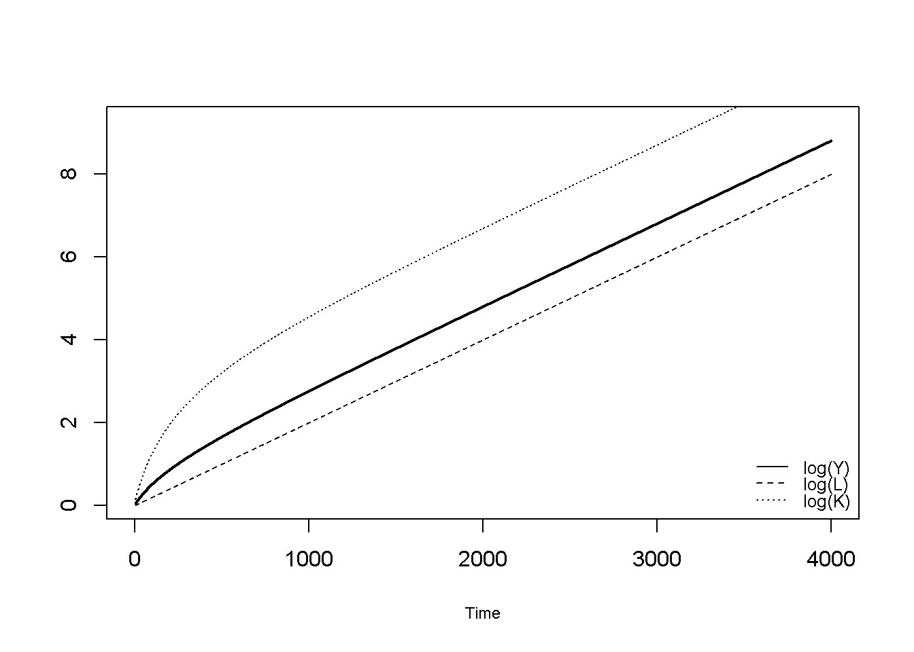
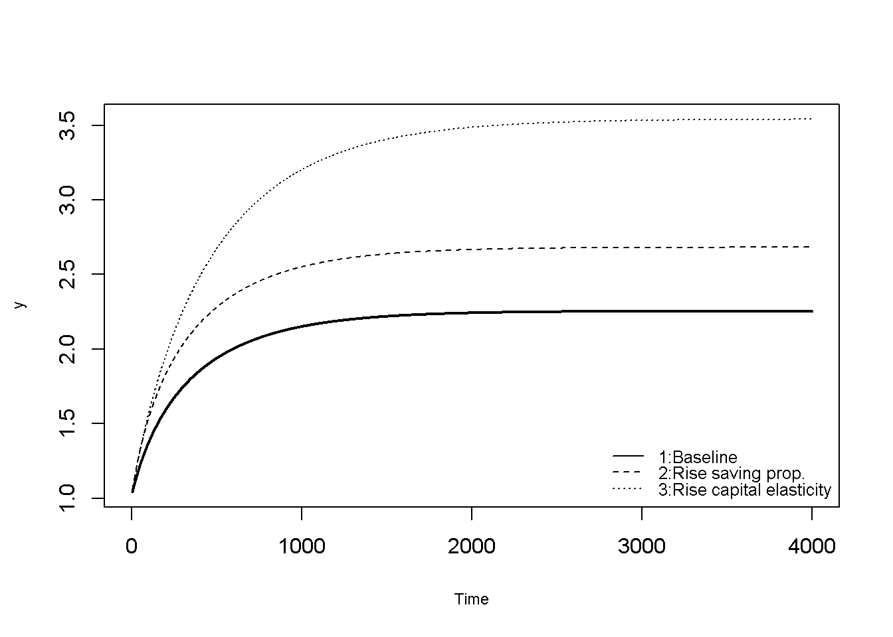
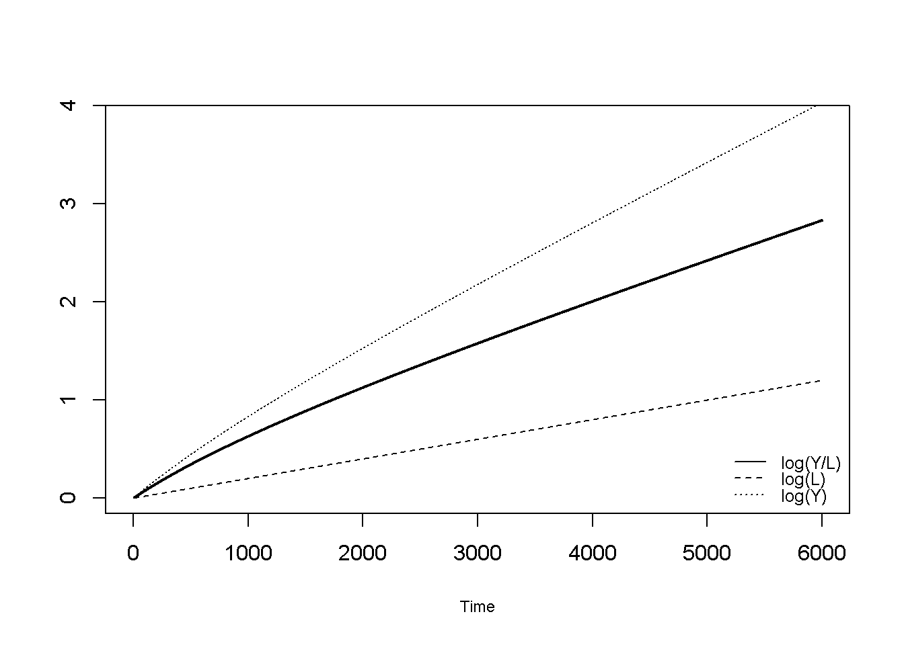
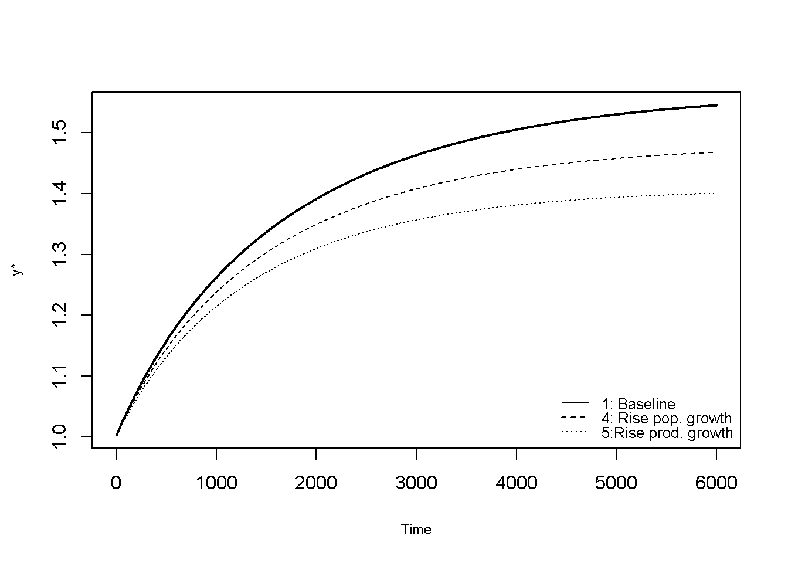

#Set number of periods
Q = 5000
# Set number of scenarios (including baseline)
sc=5
# Set period in which exogenous shift will occur
q=1
# Set time increment
d=0.1
#Create (S x Q) matrices in which equilibrium solutions from different parameterisations will be stored
Y=matrix(data=1, nrow=sc, ncol=Q) # output
K=matrix(data=1, nrow=sc, ncol=Q) # capital
L=matrix(data=1, nrow=sc, ncol=Q) # labour force
S=matrix(data=1, nrow=sc, ncol=Q) # saving
I=matrix(data=1, nrow=sc, ncol=Q) # investment
# Set constant parameters
delta=0.01 # depreciation rate
# Set and initialise exogenous variables/parameters that will be shifted
s=matrix(data=0.2, nrow=sc, ncol=Q) # saving propensity
A=matrix(data=1, nrow=sc, ncol=Q) # productivity
alpha=matrix(data=0.3, nrow=sc, ncol=Q) # elasticity of output with respect to capital
n=matrix(data=0.02, nrow=sc, ncol=Q) # labour force growth rate
# Set parameter values for different scenarios
s[2,q:Q]=0.3 # scenario 2: rise in saving propensity
alpha[3,q:Q]=0.4 # scenario 3: rise in capital elasticity of output
n[4,q:Q]=0.03 # scenario 4: rise in population growth rate
A[5,q:Q]=1.1 # scenario 5: rise in productivity
# Simulate the model by looping over Q time periods for S different scenarios
for (i in 1:sc){
for (t in 2:Q){
# Labour force growth
L[i,t] = L[i, t-1]*(1+n[i,t-1]*d)
# Capital stock dynamics
K[i,t] = K[i, t-1] + (I[i,t-1]-delta*K[i, t-1])*d
# Output
Y[i,t] =A[i,t]*(K[i,t]^(alpha[i,t]))*L[i,t]^(1-alpha[i,t])
# Saving
S[i,t] = s[i,t]*Y[i,t]
# Investment
I[i,t] = S[i,t]
} # close time loop
} # close scenarios loop21 The Solow Growth Model
Overview
This section presents a version of the famous neoclassical growth model developed by Solow (1956).1 The model is based on a neoclassical aggregate production function with capital and labour as inputs that are substitutable. The production function exhibits constant returns to scale (a doubling of both inputs leads to a doubling of output), but diminishing marginal returns to its individual inputs. Unlike the Keynesian growth models analysed in Chapter 7 and Chapter 8, growth in the neoclassical model is supply driven. There is no independent investment function; instead it is assumed that all saving is automatically invested. In the simplest version of the model with fixed productivity, growth in output and capital is driven by exogenous population growth. The output-labour ratio only grows during the adjustment towards the steady state, but then reaches a constant value that is positively related to the saving propensity and productivity. In an augmented version with exogenous labour-saving technical progress, the output-labour ratio grows at the exogenous rate of technical change.
This section present a continuous-time version of the model with a Cobb-Douglas production function.
The Model
\[ Y_{t}= A K_t^{\alpha} L_t^{1-\alpha}, \quad \alpha \in (0,1) \tag{21.1}\]
\[ \dot{K}_{t} = I_t - \delta K_{t}, \quad \delta \in (0,1) \tag{21.2}\]
\[ S_{t} = sY_t, \quad s \in (0,1) \tag{21.3}\]
\[ I_{t} = S_t, \tag{21.4}\]
\[ \dot{L}_{t} = nL_t, \tag{21.5}\]
where \(Y_t\), \(K_t\), \(S_t\), \(I_t\), and \(L_t\) represent aggregate output, the capital stock, saving, investment, and the labour force, respectively.
Equation 21.1 is the aggregate production function, which is of the Cobb-Douglas type. The coefficient \(\alpha\) represents the capital elasticity of output Since \(\alpha \in (0,1)\), the production function exhibits diminishing returns to capital and labour, but constant returns to scale. Equation 21.2 is the law of motion of the capital stock, with \(\delta\) representing the rate of depreciation. Equation 21.3 is the saving function with a constant marginal propensity to save out of income \(s\). The neoclassical growth model assumes that all saving is invested (Equation 21.4); hence there is no independent investment function. Finally, Equation 21.5 specifies exogenous labour force growth at the rate \(n\).
Simulation
Parameterisation
Table 1 reports the parameterisation used in the simulation. Beyond a baseline scenario, we will consider the effects of a rise in the propensity to save (\(s\)), a rise in in the capital elasticity of output (\(\alpha\)), a rise in the population growth rate (\(n\)), and a rise in total factor productivity (\(A\)).
Table 1: Parameterisation
| Scenario | \(s\) | \(\alpha\) | \(n\) | \(\delta\) | \(A\) |
|---|---|---|---|---|---|
| 1: baseline | 0.2 | 0.3 | 0.02 | 0.01 | 1 |
| 2: rise in prop. save (\(s\)) | 0.3 | 0.3 | 0.02 | 0.01 | 1 |
| 3: rise in capital elast. (\(\alpha\)) | 0.2 | 0.4 | 0.02 | 0.01 | 1 |
| 4: rise in pop. growth (\(n\)) | 0.2 | 0.3 | 0.03 | 0.01 | 1 |
| 5: rise in productivity (\(A\)) | 0.2 | 0.3 | 0.02 | 0.01 | 1.1 |
Simulation code
Python code
import numpy as np
# Set number of periods
Q = 5000
# Set number of scenarios (including baseline)
sc = 5
# Set period in which exogenous shift will occur
q = 1 # Python uses 0-based indexing; we adjust below
# Set time increment
d = 0.1
# Create (S x Q) matrices in which equilibrium solutions from different parameterisations will be stored
Y = np.ones((sc, Q)) # output
K = np.ones((sc, Q)) # capital
L = np.ones((sc, Q)) # labour force
S = np.ones((sc, Q)) # saving
I = np.ones((sc, Q)) # investment
# Set constant parameters
delta = 0.01 # depreciation rate
# Set and initialise exogenous variables/parameters that will be shifted
s = np.full((sc, Q), 0.2) # saving propensity
A = np.full((sc, Q), 1.0) # productivity
alpha = np.full((sc, Q), 0.3) # elasticity of output with respect to capital
n = np.full((sc, Q), 0.02) # labour force growth rate
# Set parameter values for different scenarios
# (adjusting q to Python’s 0-based indexing: q:R → q-1:Python)
s[1, q-1:Q] = 0.3 # scenario 2: rise in saving propensity
alpha[2, q-1:Q] = 0.4 # scenario 3: rise in capital elasticity of output
n[3, q-1:Q] = 0.03 # scenario 4: rise in population growth rate
A[4, q-1:Q] = 1.1 # scenario 5: rise in productivity
# Simulate the model by looping over Q time periods for S different scenarios
for i in range(sc):
for t in range(1, Q):
# Labour force growth
L[i, t] = L[i, t-1] * (1 + n[i, t-1] * d)
# Capital stock dynamics
K[i, t] = K[i, t-1] + (I[i, t-1] - delta * K[i, t-1]) * d
# Output
Y[i, t] = A[i, t] * (K[i, t] ** alpha[i, t]) * (L[i, t] ** (1 - alpha[i, t]))
# Saving
S[i, t] = s[i, t] * Y[i, t]
# Investment
I[i, t] = S[i, t]Plots
Figure 21.1 plots the natural logarithm of output, the labour force, and the capital stock. In the steady state, all these variables grow at the exogenously given labour force growth rate \(n\).
# Set maximum period for plots
Tmin=5
Tmax=4000
# Log output, labour force, and capital
plot(Tmin:Tmax,log(Y)[1, Tmin:Tmax], type="l", col=1, lwd=2, lty=1, font.main=1,cex.main=1,
ylab = '',xlab = 'Time',ylim=range(log(Y)[1:3, Tmin:Tmax]), xlim=c(0,Tmax), cex.axis=1,cex.lab=0.75)
title(main="",cex=0.8 ,line=2)
lines(Tmin:Tmax,log(L)[1, Tmin:Tmax],lty=2)
lines(Tmin:Tmax,log(K)[1, Tmin:Tmax],lty=3)
legend("bottomright", legend=c("log(Y)", "log(L)", "log(K)"),
lty=1:3, cex=0.8, bty = "n", y.intersp=0.8)

Figure 21.2 and Figure 21.3 display the dynamics of the output-labour ratio \(y=\frac{Y}{L}\) for the different scenarios. During the adjustment from the initialisation to the steady state, the model generates income-per-capita growth. In the steady state, where all variables grow at the same rate, ratios stabilise at finite values. Changes to any of the parameters other than \(n\) will change the growth path, but not the growth rate. It can be seen that compared to the baseline, a rise in the saving propensity \(s\) raises the growth path and yields a higher steady-state output-labour ratio. A similar effect occurs for a rise in the capital elasticity of output (\(\alpha\)).
# compute output-labour ratio
y=Y/L
# Output-labour ratio, pt. 1
plot(Tmin:Tmax,y[1, Tmin:Tmax], type="l", col=1, lwd=2, lty=1, font.main=1,cex.main=1,
ylab = 'y',xlab = 'Time',ylim=range(y[1:3, Tmin:Tmax]), xlim=c(0,Tmax), cex.axis=1,cex.lab=0.75)
title(main="",cex=0.8 ,line=2)
lines(Tmin:Tmax,y[2, Tmin:Tmax],lty=2)
lines(Tmin:Tmax,y[3, Tmin:Tmax],lty=3)
legend("bottomright", legend=c("1:Baseline", "2:Rise saving prop.", "3:Rise capital elasticity"),
lty=1:3, cex=0.8, bty = "n", y.intersp=0.8)

In Figure 21.3 it can be seen that a rise in labour force growth rate \(n\) lowers income-per-capita in the steady state, despite raising the growth rate of all variables in levels. By contrast, a rise in total factor productivity \(A\) leads to higher income-per-capita.
# Output-labour ratio, pt. 2
plot(Tmin:Tmax, y[1, Tmin:Tmax], type="l", col=1, lwd=2, lty=1, font.main=1,cex.main=1,
ylab = 'y',xlab = 'Time',ylim=range(y[4:5, Tmin:Tmax]), xlim=range(0:Tmax), cex.axis=1,cex.lab=0.75)
title(main="",cex=0.8 ,line=2)
lines(Tmin:Tmax, y[4, Tmin:Tmax],lty=2)
lines(Tmin:Tmax, y[5, Tmin:Tmax],lty=3)
legend("bottomright", legend=c("Baseline", "4:Rise pop. growth", "5:Rise productivity"),
lty=1:3, cex=0.8, bty = "n", y.intersp=0.8)
Python code
import matplotlib.pyplot as plt
# Set maximum period for plots
Tmin = 5
Tmax = 4000
# Log output, labour force, and capital
t_range = np.arange(Tmin, Tmax + 1)
plt.plot(
t_range,
np.log(Y[0, Tmin:Tmax+1]), # scenario 1, log(Y)
linewidth=2,
linestyle='-',
color='black'
)
plt.title("") # main title
plt.ylabel('')
plt.xlabel('Time')
# match R's ylim = range(log(Y)[1:3, Tmin:Tmax])
ylim_min = np.log(Y[0:3, Tmin:Tmax+1]).min()
ylim_max = np.log(Y[0:3, Tmin:Tmax+1]).max()
plt.ylim(ylim_min, ylim_max)
plt.xlim(0, Tmax)
# Add lines for log(L) and log(K)
plt.plot(t_range, np.log(L[0, Tmin:Tmax+1]), linestyle='--', color='black')
plt.plot(t_range, np.log(K[0, Tmin:Tmax+1]), linestyle=':', color='black')
# Legend
plt.legend(["log(Y)", "log(L)", "log(K)"], loc="lower right")
plt.show()
# compute output-labour ratio
y = Y / L
# Output-labour ratio, pt. 1
t_range = np.arange(Tmin, Tmax + 1)
plt.plot(
t_range,
y[0, Tmin:Tmax+1], # scenario 1 (baseline)
linewidth=2,
linestyle='-',
color='black'
)
plt.title("", fontsize=8)
plt.ylabel('y')
plt.xlabel('Time')
# ylim = range(y[1:3, Tmin:Tmax])
ylim_min = y[0:3, Tmin:Tmax+1].min()
ylim_max = y[0:3, Tmin:Tmax+1].max()
plt.ylim(ylim_min, ylim_max)
plt.xlim(0, Tmax)
# Add additional scenarios
plt.plot(t_range, y[1, Tmin:Tmax+1], linestyle='--', color='black') # scenario 2
plt.plot(t_range, y[2, Tmin:Tmax+1], linestyle=':', color='black') # scenario 3
plt.legend(
["1: Baseline", "2: Rise saving prop.", "3: Rise capital elasticity"],
loc="lower right",
frameon=False
)
plt.show()
# Output-labour ratio, pt. 2
t_range = np.arange(Tmin, Tmax + 1)
plt.plot(
t_range,
y[0, Tmin:Tmax+1], # baseline (R's y[1,] → Python y[0,])
linewidth=2,
linestyle='-',
color='black'
)
plt.title("", fontsize=8)
plt.ylabel('y')
plt.xlabel('Time')
# ylim = range(y[4:5, Tmin:Tmax]) → R rows 4 & 5 → Python rows 3 & 4
ylim_min = y[3:5, Tmin:Tmax+1].min()
ylim_max = y[3:5, Tmin:Tmax+1].max()
plt.ylim(ylim_min, ylim_max)
# xlim = range(0:Tmax) in R; Python equivalent:
plt.xlim(0, Tmax)
# Additional scenarios
plt.plot(t_range, y[3, Tmin:Tmax+1], linestyle='--', color='black') # scenario 4 (pop. growth)
plt.plot(t_range, y[4, Tmin:Tmax+1], linestyle=':', color='black') # scenario 5 (productivity)
plt.legend(
["Baseline", "4: Rise pop. growth", "5: Rise productivity"],
loc="lower right",
frameon=False
)
plt.show()Directed graph
Another perspective on the model’s properties is provided by its directed graph. A directed graph consists of a set of nodes that represent the variables of the model. Nodes are connected by directed edges. An edge directed from a node \(x_1\) to node \(x_2\) indicates a causal impact of \(x_1\) on \(x_2\).
## Create directed graph
# Construct auxiliary Jacobian matrix for 9 variables:
# endogenous: (1) Y, (2) K, (3) S, (4) I, (5) L
# exogenous: (6) s, (7) A, (8) alpha, (9) n
#Y K S I L s A a n
M_mat=matrix(c(0,1,0,0,1,0,1,1,0,# Y
0,0,0,1,0,0,0,0,0,# K
1,0,0,0,0,1,0,0,0,# S
0,0,1,0,0,0,0,0,0,# I
0,0,0,0,0,0,0,0,1,# L
0,0,0,0,0,0,0,0,0,# s
0,0,0,0,0,0,0,0,0,# A
0,0,0,0,0,0,0,0,0,# alpha
0,0,0,0,0,0,0,0,0# n
),
9, 9, byrow=TRUE)
# Create adjacency matrix from transpose of auxiliary Jacobian
A_mat=t(M_mat)
# Create directed graph from adjacency matrix
library(igraph)
dg=graph_from_adjacency_matrix(A_mat, mode="directed", weighted= NULL)
# Define node labels
V(dg)$name=c("Y", "K", "S", "I", "L", "s", "A", expression(alpha), "n")
# Plot directed graph
plot(dg, main="", vertex.size=30, vertex.color="lightblue",
vertex.label.color="black", edge.arrow.size=0.3, edge.width=1.1, edge.size=1.2,
edge.arrow.width=1.2, edge.color="black", vertex.label.cex=1.2,
vertex.frame.color="NA", margin=-0.08)
Python code
import networkx as nx
# -----------------------------------------------------
# Create directed graph
# Construct auxiliary Jacobian matrix for 9 variables:
# endogenous: (1) Y, (2) K, (3) S, (4) I, (5) L
# exogenous: (6) s, (7) A, (8) alpha, (9) n
# -----------------------------------------------------
# Y K S I L s A a n
M_mat = np.array([
[0,1,0,0,1,0,1,1,0], # Y
[0,0,0,1,0,0,0,0,0], # K
[1,0,0,0,0,1,0,0,0], # S
[0,0,1,0,0,0,0,0,0], # I
[0,0,0,0,0,0,0,0,1], # L
[0,0,0,0,0,0,0,0,0], # s
[0,0,0,0,0,0,0,0,0], # A
[0,0,0,0,0,0,0,0,0], # alpha
[0,0,0,0,0,0,0,0,0] # n
])
# Create adjacency matrix from transpose of auxiliary Jacobian
A_mat = M_mat.T
# Create directed graph from adjacency matrix
dg = nx.from_numpy_array(A_mat, create_using=nx.DiGraph)
# Define node labels
labels = {
0: "Y",
1: "K",
2: "S",
3: "I",
4: "L",
5: "s",
6: "A",
7: r"$\alpha$",
8: "n"
}
# Plot directed graph
plt.figure(figsize=(7,7))
pos = nx.spring_layout(dg, seed=23) # automatic layout
nx.draw(
dg, pos,
labels=labels,
node_size=1200,
node_color="lightblue",
edge_color="black",
width=1.1,
arrowsize=15,
arrowstyle="-|>",
font_size=12,
font_color="black"
)
plt.title("")
plt.axis("off")
plt.show()Figure 21.4 illustrates the critical role of labour force growth \(n\) as the driver of economic growth. Higher labour input translates into higher output, a fixed portion of which is saved. Savings, in turn, drive investment, which raises the capital stock that can be used to produce more output.
Next, we will consider a version with exogenous technical progress, in which \(A\) becomes the main driver of growth, triggering the same feedback loop between output, saving, and investment.
Adding exogenous technical progress
We have seen that the neoclassical growth model with fixed total factor productivity \(A\) does not generate permanent income-per-capita growth. A common extension is to let productivity grow at an exogenous rate \(\mu\):
\[ \dot{A}=A\mu. \] For exogenous technical progress to yield balanced growth where output grows at a constant rate and the capital-output ratio remains constant in the steady state, it must be labour augmenting:2 \(Y_t=F(K_t, A_t L_t)\).
With a Cobb-Douglas production function, this requires:
\[ Y_{t}= K_t^{\alpha} (A_tL_t)^{1-\alpha}, \quad \alpha \in (0,1). \tag{21.6}\]
Let’s simulate the model with labour-augmenting technical progress.
#Clear the environment
rm(list=ls(all=TRUE))
#Set number of periods
Q = 20000
# Set number of scenarios (including baseline)
sc=5
# Set period in which exogenous shift will occur
q=1
# Set time increment
d=0.01
#Create (S x Q) matrices in which equilibrium solutions from different parameterisations will be stored
Y=matrix(data=1, nrow=sc, ncol=Q) # output
K=matrix(data=1, nrow=sc, ncol=Q) # capital
L=matrix(data=1, nrow=sc, ncol=Q) # labour force
A=matrix(data=1, nrow=sc, ncol=Q) # total factor productivity
S=matrix(data=1, nrow=sc, ncol=Q) # saving
I=matrix(data=1, nrow=sc, ncol=Q) # investment
# Set constant parameters
delta=0.01 # depreciation rate
# Set and initialise exogenous variables/parameters that will be shifted
s=matrix(data=0.2, nrow=sc, ncol=Q) # saving propensity
A=matrix(data=1, nrow=sc, ncol=Q) # productivity
alpha=matrix(data=0.3, nrow=sc, ncol=Q) # elasticity of output with respect to capital
n=matrix(data=0.02, nrow=sc, ncol=Q) # labour force growth rate
mu=matrix(data=0.04, nrow=sc, ncol=Q) # productivity growth rate
# Set parameter values for different scenarios
s[2,q:Q]=0.3 # scenario 2: rise in saving propensity
alpha[3,q:Q]=0.4 # scenario 3: rise in capital elasticity of output
n[4,q:Q]=0.03 # scenario 4: rise in population growth rate
mu[5,q:Q]=0.06 # scenario 5: rise in productivity growth rate
# Simulate the model by looping over Q time periods for S different scenarios
for (i in 1:sc){
for (t in 2:Q){
# Labour force growth
L[i,t] = L[i, t-1]*(1+n[i,t-1]*d)
# Productivity growth
A[i,t] = A[i,t-1]*(1+mu[i,t-1]*d)
# Capital stock dynamics
K[i,t] = K[i, t-1] + (I[i,t-1]-delta*K[i, t-1])*d
# Output
Y[i,t] = (K[i,t]^alpha[i,t])*(A[i,t]*L[i,t])^(1-alpha[i,t])
# Saving
S[i,t] = s[i,t]*Y[i,t]
# Investment
I[i,t] = S[i,t]
} # close time loop
} # close scenarios loopFigure 21.5 shows that with labour-augmenting technical progress, the output-labour ratio grows at the rate \(\mu\) (and so does the capital-output ratio), while the labour force continues to grow at \(n\). Output grows at \(\mu + n\).
# Set maximum period for plots
Tmin=5
Tmax=6000
# Log output-labour, labour force, and output
plot(Tmin:Tmax,log(Y/L)[1, Tmin:Tmax], type="l", col=1, lwd=2, lty=1, font.main=1,cex.main=1,
ylab = '',xlab = 'Time',ylim=range(log(Y/L)[1, Tmin:Tmax], log(L)[1, Tmin:Tmax], log(K/L)[1, Tmin:Tmax]), xlim=c(0,Tmax), cex.axis=1,cex.lab=0.75)
title(main="",cex=0.8 ,line=2)
lines(Tmin:Tmax,log(L)[1, Tmin:Tmax],lty=2)
lines(Tmin:Tmax,log(Y)[1, Tmin:Tmax],lty=3)
legend("bottomright", legend=c("log(Y/L)", "log(L)", "log(Y)"),
lty=1:3, cex=0.8, bty = "n", y.intersp=0.8)

In the model with labour-augmenting technical progress, it is common to normalise variables by units of “effective labour” \(A_tL_t\). The output-effective labour ratio is then defined as \(y^*=\frac{Y_t}{A_t L_t}\). Figure 21.6 - Figure 21.7 plots the dynamics of this ratio for the different scenarios, where the last scenario is now given by an increase in the productivity growth rate \(\mu\). As in the model without productivity growth, a rise in the saving propensity \(s\) raises the growth path and yields a higher steady-state output-effective labour ratio. A similar effect occurs for a rise in the capital elasticity of output (\(\alpha\)).
# compute output-labour ratio in effective labour units
y=Y/(A*L)
# Output-effective labour ratio
plot(Tmin:Tmax,y[1, Tmin:Tmax], type="l", col=1, lwd=2, lty=1, font.main=1,cex.main=1,
ylab = 'y*',xlab = 'Time',ylim=range(y[1:3, Tmin:Tmax]), xlim=c(0,Tmax), cex.axis=1,cex.lab=0.75)
title(main="",cex=0.8 ,line=2)
lines(Tmin:Tmax,y[2, Tmin:Tmax],lty=2)
lines(Tmin:Tmax,y[3, Tmin:Tmax],lty=3)
legend("bottomright", legend=c("1:Baseline", "2: Rise saving prop.", "3: Rise capital elasticity"),
lty=1:3, cex=0.8, bty = "n", y.intersp=0.8)
A rise in either the population or in the productivity growth rate reduces the steady-state output-effective labour ratio.
# Output-effective labour ratio
plot(Tmin:Tmax, y[1, Tmin:Tmax], type="l", col=1, lwd=2, lty=1, font.main=1,cex.main=1,
ylab = 'y*',xlab = 'Time',ylim=range(y[1, Tmin:Tmax], y[4:5, Tmin:Tmax]), xlim=range(0:Tmax), cex.axis=1,cex.lab=0.75)
title(main="",cex=0.8 ,line=2)
lines(Tmin:Tmax, y[4, Tmin:Tmax],lty=2)
lines(Tmin:Tmax, y[5, Tmin:Tmax],lty=3)
legend("bottomright", legend=c("1: Baseline", "4: Rise pop. growth", "5:Rise prod. growth"),
lty=1:3, cex=0.8, bty = "n", y.intersp=0.8)

Python code
# --------------------------------------------------
# Set number of periods
# --------------------------------------------------
Q = 20000
# Set number of scenarios (including baseline)
sc = 5
# Set period in which exogenous shift will occur
q = 1 # Will adjust to Python's 0-based index in slicing
# Set time increment
d = 0.01
# --------------------------------------------------
# Create (S x Q) matrices in which equilibrium solutions
# from different parameterisations will be stored
# --------------------------------------------------
Y = np.ones((sc, Q)) # output
K = np.ones((sc, Q)) # capital
L = np.ones((sc, Q)) # labour force
A = np.ones((sc, Q)) # total factor productivity
S = np.ones((sc, Q)) # saving
I = np.ones((sc, Q)) # investment
# --------------------------------------------------
# Set constant parameters
# --------------------------------------------------
delta = 0.01 # depreciation rate
# --------------------------------------------------
# Set and initialise exogenous variables/parameters
# that will be shifted
# --------------------------------------------------
s = np.full((sc, Q), 0.2) # saving propensity
A_ex = np.full((sc, Q), 1.0) # productivity (renamed A_ex to avoid confusion with A above)
alpha = np.full((sc, Q), 0.3) # elasticity of output wrt capital
n = np.full((sc, Q), 0.02) # labour force growth rate
mu = np.full((sc, Q), 0.04) # productivity growth rate
# --------------------------------------------------
# Set parameter values for different scenarios
# (convert R's q:Q to Python's q-1:Q)
# --------------------------------------------------
s[1, q-1:Q] = 0.3 # scenario 2: rise in saving propensity
alpha[2, q-1:Q] = 0.4 # scenario 3: rise in capital elasticity
n[3, q-1:Q] = 0.03 # scenario 4: rise in population growth rate
mu[4, q-1:Q] = 0.06 # scenario 5: rise in productivity growth rate
# --------------------------------------------------
# Simulate the model by looping over time periods
# for S different scenarios
# --------------------------------------------------
for i in range(sc):
for t in range(1, Q):
# Labour force growth
L[i, t] = L[i, t-1] * (1 + n[i, t-1] * d)
# Productivity growth
A[i, t] = A[i, t-1] * (1 + mu[i, t-1] * d)
# Capital stock dynamics
K[i, t] = K[i, t-1] + (I[i, t-1] - delta * K[i, t-1]) * d
# Output
Y[i, t] = (K[i, t] ** alpha[i, t]) * ((A[i, t] * L[i, t]) ** (1 - alpha[i, t]))
# Saving
S[i, t] = s[i, t] * Y[i, t]
# Investment
I[i, t] = S[i, t]
# Set maximum period for plots
Tmin = 5
Tmax = 6000
t_range = np.arange(Tmin, Tmax + 1)
# Compute ratios
YL = Y / L # Y/L
KL = K / L # K/L
# Log output-labour, labour force, and output
plt.plot(
t_range,
np.log(YL[0, Tmin:Tmax+1]), # log(Y/L), baseline scenario
linewidth=2,
linestyle='-',
color='black'
)
plt.title("", fontsize=8)
plt.xlabel("Time")
plt.ylabel("")
# R equivalent:
# ylim = range(log(Y/L)[1,...], log(L)[1,...], log(K/L)[1,...])
ylim_min = min(
np.log(YL[0, Tmin:Tmax+1]).min(),
np.log(L[0, Tmin:Tmax+1]).min(),
np.log(KL[0, Tmin:Tmax+1]).min()
)
ylim_max = max(
np.log(YL[0, Tmin:Tmax+1]).max(),
np.log(L[0, Tmin:Tmax+1]).max(),
np.log(KL[0, Tmin:Tmax+1]).max()
)
plt.ylim(ylim_min, ylim_max)
plt.xlim(0, Tmax)
# Additional lines
plt.plot(t_range, np.log(L[0, Tmin:Tmax+1]), linestyle='--', color='black') # log(L)
plt.plot(t_range, np.log(Y[0, Tmin:Tmax+1]), linestyle=':', color='black') # log(Y)
# Legend
plt.legend(
["log(Y/L)", "log(L)", "log(Y)"],
loc="lower right",
frameon=False
)
plt.show()Analytical discussion
To study mathematically the Solow model (firstly without technical progress), it is common to reduce the model to a differential equation in the capital-labour ratio \(k=\frac{K}{L}\). Differentiating this ratio with respect to time (where \(\dot{x}=\frac{dx}{dt}\) and \(\hat{x}=\frac{\dot{x}}{x}\)), we have:
\[ \dot{k}=\frac{\dot K}{L}-\hat{L}k. \]
Using Equation 21.2, Equation 21.4, Equation 21.3, Equation 21.5, and Equation 21.1, and simplifying we get: \[ \dot{k}= sAk^{\alpha}-(n+\delta)k. \tag{21.7}\]
This is a nonlinear differential equation called Bernoulli differential equation that has the general form \(\dot{y} + ay = by^n\). A convenient feature of the Bernoulli equation is that it can easily be transformed into a linear differential equation that can then be analysed in the standard way.
To do this, re-write Equation 21.7 as follows: \[ \dot{k} +(n+\delta)k= sAk^{\alpha}, \] and multiply through by \(k^{-\alpha}\):
\[ \dot{k}k^{-\alpha} +(n+\delta)k^{1-\alpha}= sAk. \] Now define \(z=k^{1-\alpha}\) with time derivative \(\dot{z}=(1-\alpha)k^{-\alpha}\dot{k}\), so that \(\dot{k}= \frac{\dot{z}}{(1-\alpha)k^{-\alpha}}\). With these definitions, our equation can be written as:
\[ \frac{\dot{z}}{(1-\alpha)k^{-\alpha}}k^{-\alpha} + (n+\delta)z=sA, \] which can be simplified to: \[ \dot{z}(1-\alpha)(n+\delta)z=(1-\alpha)sA, \tag{21.8}\]
which is now a linear differential equation in \(z\).
Setting \(\dot{z}=0\), we can find its steady state solution: \[ z^*=\frac{sA}{n+\delta}. \] Using the definition \(z=k^{1-\alpha}\), this gives us the following steady state solutions for the capital-labour ratio \(k\) and the capital-output ratio \(y\):
\[ k^*=\left(\frac{sA}{n+\delta}\right)^\frac{1}{1-\alpha}, \]
\[ y^*=Ak^{*\alpha}. \] Under which conditions will the system converge to the steady state? From Equation 21.8, we can see that if \((1-\alpha)(n+\delta)>0\), we have \(\frac{d\dot{z}}{dz}<0\), so that deviations from the steady state are self-correcting, yielding stability. With diminishing returns in the production function (\(\alpha <1\)), the stability condition is always satisfied.
The formal analysis of the model with exogenous technical progress is very similar. It is common to normalise variables by “effective labour” \(A_tL_t\), so that \(k=\frac{K_t}{A_tL_t}\) and \(y=\frac{Y_t}{A_tL_t}\). Differentiation of \(k\) with respect to time then yields:
\[ \dot{k}=\frac{\dot K}{AL}-\hat{L}k-\hat{A}k. \] Using the relevant equations as before as well as \(y=\frac{Y_t}{A_tL_t}=k^\alpha\), this expression can be written as: \[ \dot{k}= sk^{\alpha}-(n+\delta+\mu)k, \] which is very similar to Equation 21.7, except for the presence of \(\mu\). The resulting steady state \(k\) and \(y\) are given by:
\[ k^*=\left(\frac{s}{n+\delta+\mu}\right)^\frac{1}{1-\alpha}, \]
\[ y^*=k^{*\alpha}. \] We can confirm these analytical results using the numerical simulation of the model with technical progress:
# Check analytical results (here for baseline only)
k=K/(A*L) # construct capital-effective labour ratio
y=Y/(A*L) # construct output-effective labour ratio
k[1,Q] # numerical solution[1] 4.479588(s[1,Q]/(n[1,Q] + delta + mu[1,Q]))^(1/(1-alpha[1,Q])) # analytical solution[1] 4.48055y[1,Q] # numerical solution[1] 1.568092(s[1,Q]/(n[1,Q] + delta + mu[1,Q]))^(alpha[1,Q]/(1-alpha[1,Q])) # analytical solution[1] 1.568193
Python code
k=K/(A*L) # construct capital-effective labour ratio
y=Y/(A*L) # construct output-effective labour ratio
k[0,Q-1] # numerical solution
(s[0,Q-1]/(n[0,Q-1] + delta + mu[0,Q-1]))**(1/(1-alpha[0,Q-1])) # analytical solution
y[0,Q-1] # numerical solution
(s[0,Q-1]/(n[0,Q-1] + delta + mu[0,Q-1]))**(alpha[0,Q-1]/(1-alpha[0,Q-1])) # analytical solutionUp to a small approximation error, the solutions match.
Finally, we can derive the growth rate of output, by taking the log of Equation 21.6, giving:
\[ \ln(Y_t)=\alpha \ln(K_t)+(1-\alpha)[\ln(A_t)+\ln(L_t)]. \] Differentiating with respect to time yields: \[ g_Y = \alpha g_K + (1- \alpha)(g_A+g_L), \] where \(g_Y\) is the growth rate of \(Y\) and so forth.
On a balanced growth path with a constant output-capital ratio, we have \(g_K=g_Y\), giving: \[ g_Y = g_A + g_L = \mu + n. \]
References
Acemoglu, Daron. 2009. Introduction to Modern Economic Growth. Princeton University Press.
Garín, Julio, Robert Lester, and Eric Sims. 2021. Intermediate Macroeconomics. Draft Version 3.0.1. https://juliogarin.com/files/textbook/GLS_Intermediate_Macro.pdf.
Solow, Robert M. 1956. “A Contribution to the Theory of Economic Growth.” The Quarterly Journal of Economics 70 (1): 65. https://doi.org/10.2307/1884513.